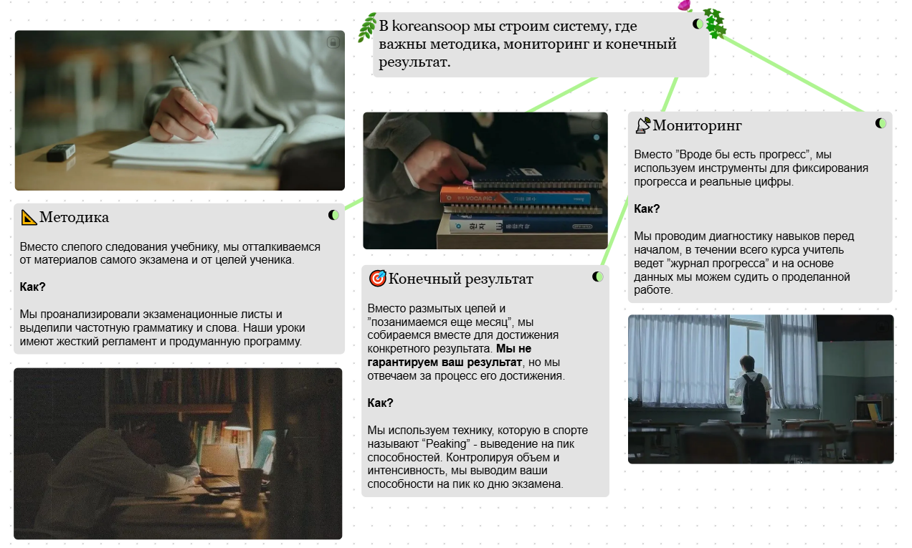

***
В korean.soop мы строим систему, которая не зависит от одного учебника, одного учебного центра или личности преподавателя.
Мы подумали, что на рынке уже достаточно достойных учебных центров, курсов и замечательных преподавателей. Мы не пытаемся стать "очередным" центром.
Вместо этого, мы хотели бы стать полезным дополнением. Предлагая материалы для преподавателей и учеников. А также, интенсивные курсы для прокачки одного конкретного навыка.
***
